浙江片区（杭州为主，湖州 1 例）
约120㎡ · 目标三房半 · 两梯（4 例，其中带图 4）
Z1 · 滨江兴耀·鸣澜里 望岫B（杭州·拱墅运河新城）
| 年份 | 2026（图源上传 2026-10-24） | 面积 | 约120㎡ |
|---|---|---|---|
| 房型 | 四房两厅两卫（其一为“围合静思书房”，即三房+书房） | 梯户 | 两梯两户为主（推断，未核实） |
| 得房率 | 未核实（网上广告称约90–93%，低可信，未采用） | ||
亮点：南向面宽约13.1m“沐光四房”；约3.6m宽客厅“会客聚场”；独立书房；主卧套房+衣帽
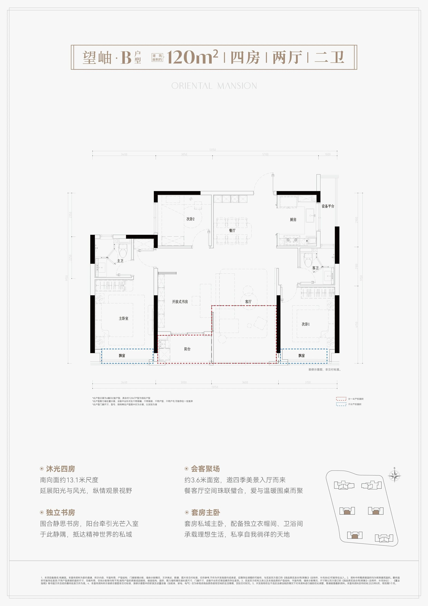
来源：https://m.kan3721.com/huxing2586-44283.html（2026-10-24）
Z2 · 滨江·云杭里 A“云舒”（杭州）
| 年份 | 2026（图源上传 2026-03-20） | 面积 | 约119㎡ |
|---|---|---|---|
| 房型 | 三房+灵动书房（标准三房半） | 梯户 | 未核实 |
| 得房率 | 未核实 | ||
亮点：U型明厨约7㎡；约6.2m全景边厅转角窗；主卧套房+飘窗；南向三卧约9.1m；全明客卫
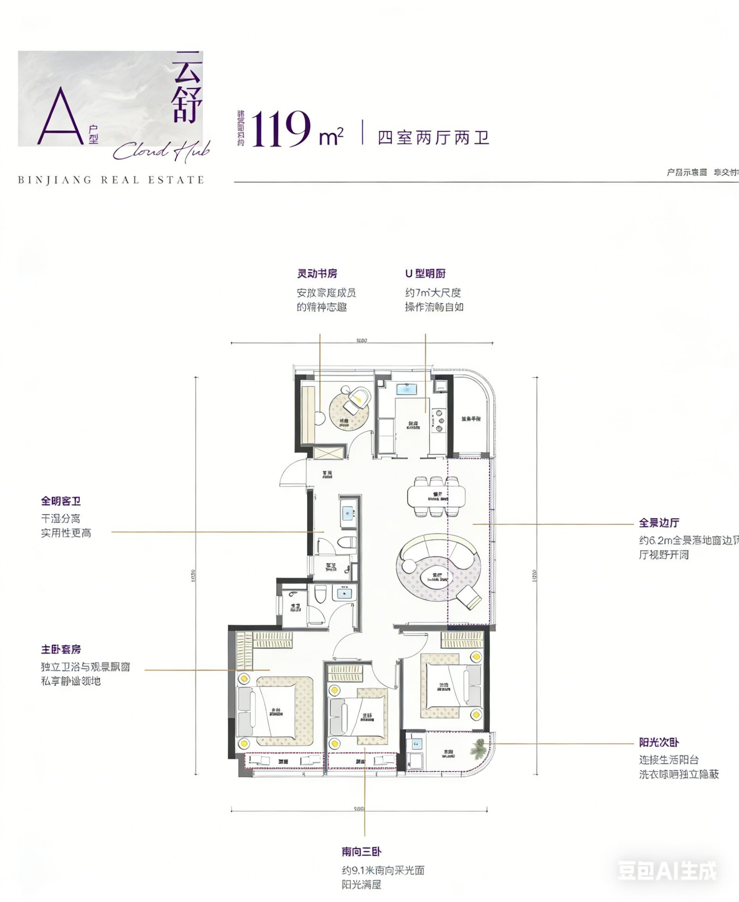
来源：https://m.kan3721.com/huxing2566-44012.html（2026-03-20）；图右下有小“豆包AI生成”角标（转载站加），不影响读图
Z3 · 建发·云城之上 B2（杭州）
| 年份 | 2024（图源上传 2024-08-24） | 面积 | 约119㎡ |
|---|---|---|---|
| 房型 | 四房两厅两卫（含一间书房） | 梯户 | 图示两部电梯+双楼梯（两梯，户数未核实） |
| 得房率 | 未核实 | ||
亮点：三开间朝南+客厅连宽阳台；书房居中可做多功能房；双设备平台
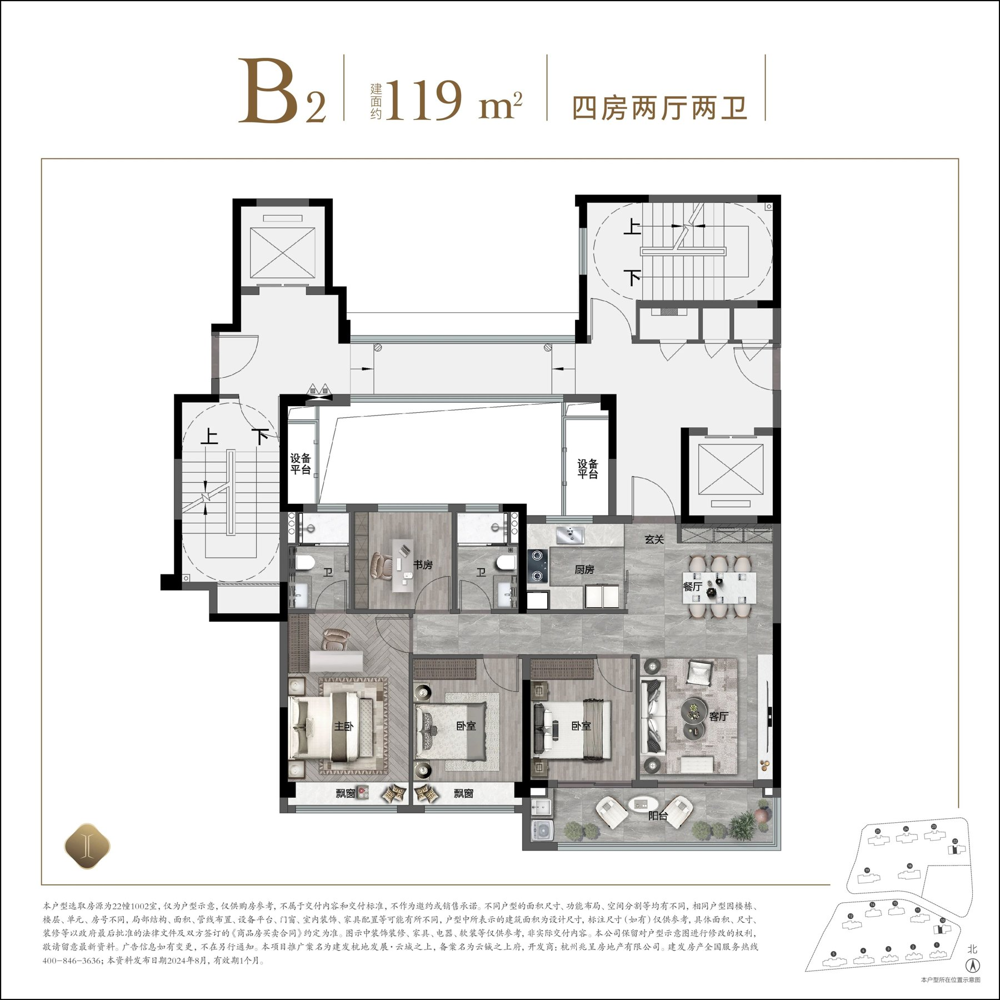
来源：https://m.kan3721.com/huxing2541-43620.html（2024-08-24）
Z4 · 建发·云栖上宸 B“云映”（杭州）
| 年份 | 2024（图源上传 2024-09-20） | 面积 | 约121㎡ |
|---|---|---|---|
| 房型 | 四室两厅两卫 | 梯户 | 未核实 |
| 得房率 | 未核实 | ||
亮点：全明户型、三开间；U形厨房3.2m开间；6.8m宽沐光阳台；北向生活阳台；LDK一体
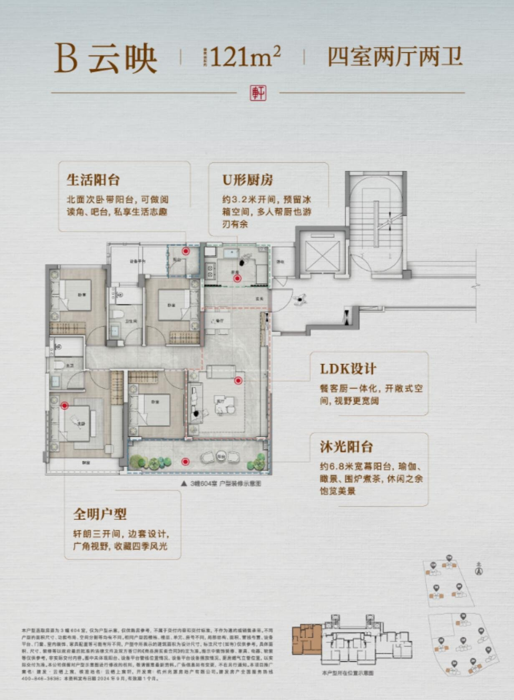
来源：https://m.kan3721.com/huxing2545-43676.html（2024-09-20）
约130㎡ · 四房 · 一梯（4 例，其中带图 4）
Z5 · 建发·云栖上宸 C“云琅”（杭州）
| 年份 | 2024（图源上传 2024-09-20） | 面积 | 约130㎡ |
|---|---|---|---|
| 房型 | 四室两厅两卫 | 梯户 | 图示一部电梯（户数未核实） |
| 得房率 | 未核实 | ||
亮点：独立玄关；超13m三向朝南；约6.3m观景阳台；LDK横厅；奢阔套房；独立储藏间
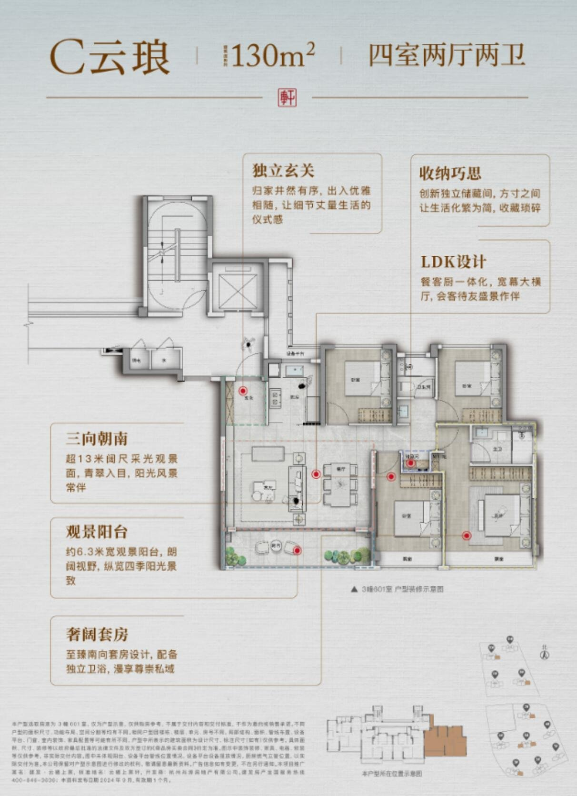
来源：https://m.kan3721.com/huxing2545-43675.html（2024-09-20）
Z6 · 中交·荷语江山府 C（杭州）
| 年份 | 2024（图源上传 2024-09-20） | 面积 | 约129㎡ |
|---|---|---|---|
| 房型 | 四房两厅两卫 | 梯户 | 未核实 |
| 得房率 | 未核实 | ||
亮点：约6.2m宽屏大横厅；约9.1m跑道阳台；主卧“小家化”带独立卫浴；半开放U型厨；S型墙体收纳
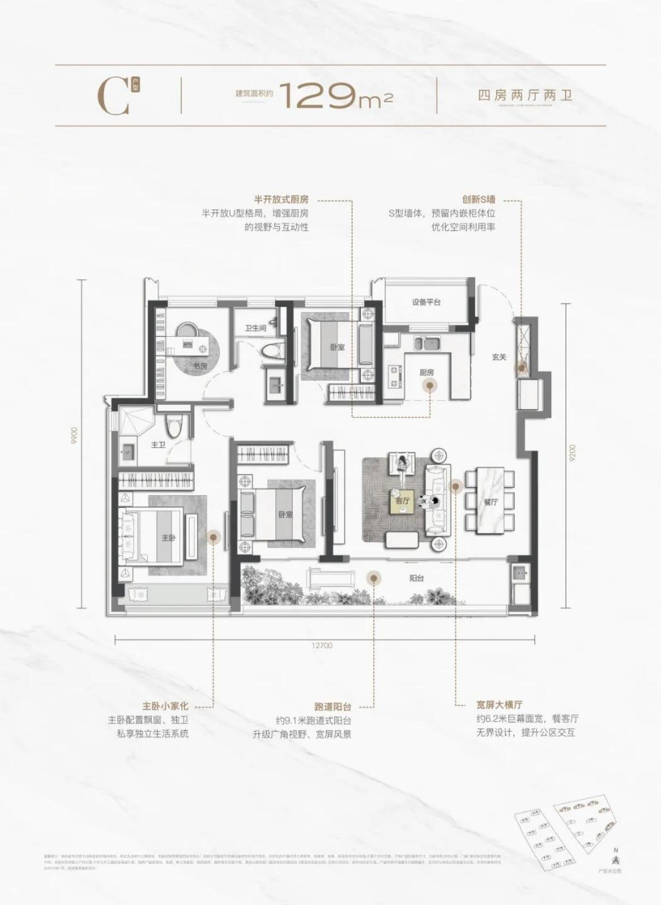
来源：https://m.kan3721.com/huxing2543-43650.html（2024-09-20）
Z7 · 和萃·揽悦园 E“嘉和”（杭州）
| 年份 | 2025（图源上传 2025-03-01） | 面积 | 约128㎡ |
|---|---|---|---|
| 房型 | 四室两厅两卫 | 梯户 | 未核实 |
| 得房率 | 未核实 | ||
亮点：全屋拓展收纳约17,180L；约5m南向观景阳台；套房主卧；U型厨房；三居室朝南
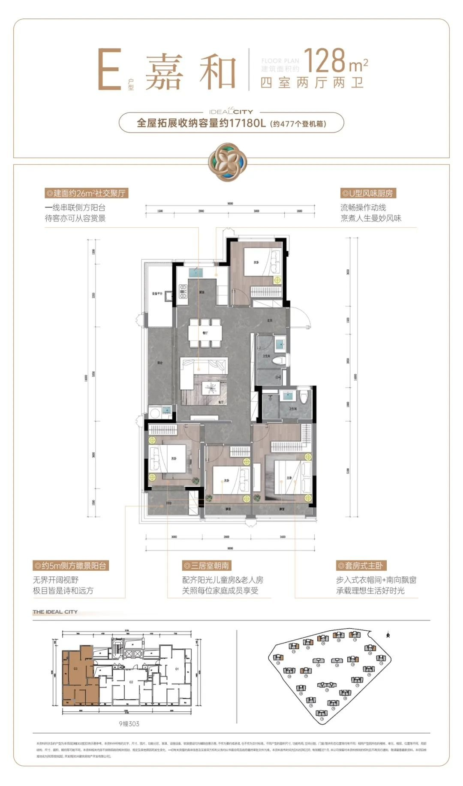
来源：https://m.kan3721.com/huxing2560-43934.html（2025-03-01）
Z8 · 滨江·云杭里 B2“云璟”（杭州）
| 年份 | 2026（图源上传 2026-03-20） | 面积 | 约127㎡ |
|---|---|---|---|
| 房型 | 四室两厅两卫（含约3.55m景观书房） | 梯户 | 未核实 |
| 得房率 | 未核实 | ||
亮点：四开间朝南约13.5m；约6.9m全景阳台；主卧套房+飘窗；U型厨2.85m；入户收纳
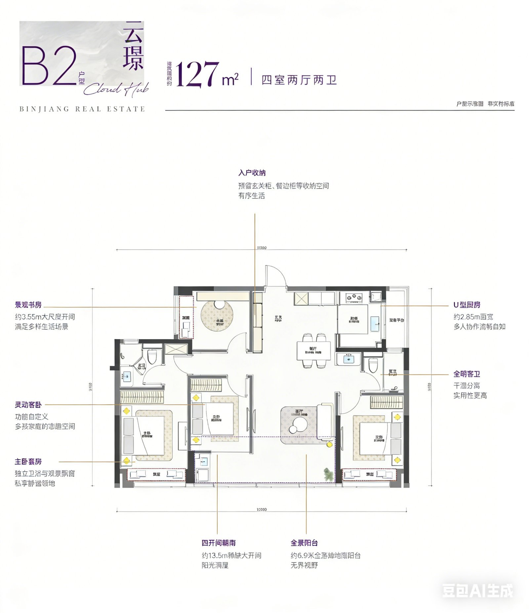
来源：https://m.kan3721.com/huxing2566-44010.html（2026-03-20）；角标同 Z2
约148㎡ · 四房 · 一梯（4 例，其中带图 3）
Z9 · 绿城·咏湖雲庐 A2“银鞍”（杭州）
| 年份 | 2025（图源上传 2025-02-20） | 面积 | 约148㎡ |
|---|---|---|---|
| 房型 | 四房两厅两卫 | 梯户 | 未核实 |
| 得房率 | 未核实 | ||
亮点：子母门+独立玄关；约14.2m南向面宽、四开间朝南；宽U型厨；LDK一体；多功能房
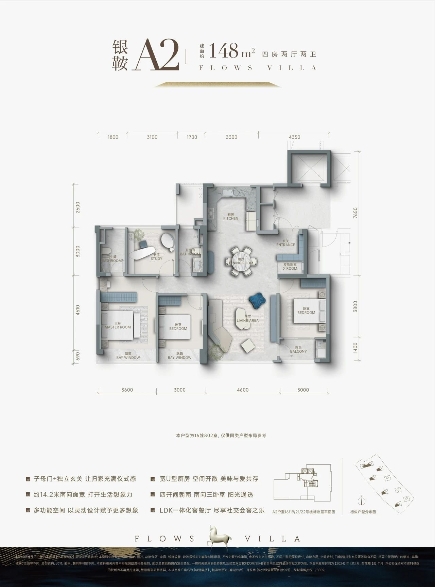
来源：https://m.kan3721.com/huxing2554-43837.html（2025-02-20）
Z10 · 绿城·咏湖雲庐 A1“青衿”（杭州）
| 年份 | 2025（图源上传 2025-02-20） | 面积 | 约146㎡ |
|---|---|---|---|
| 房型 | 四房两厅两卫 | 梯户 | 未核实 |
| 得房率 | 未核实 | ||
亮点：三卧朝南；一体化客餐双厅；全景大飘窗；主卧套房+转角观景

来源：https://m.kan3721.com/huxing2554-43838.html（2025-02-20）
Z11 · 兴耀·沐云川 D“沐品”（杭州）
| 年份 | 2025（图源上传 2025-02-19） | 面积 | 约145㎡ |
|---|---|---|---|
| 房型 | 四室两厅两卫 | 梯户 | 未核实 |
| 得房率 | 未核实 | ||
亮点：独立玄关；三开间朝南约10.3m；LDK 270°采光；U型厨；套房主卧；南向阳台
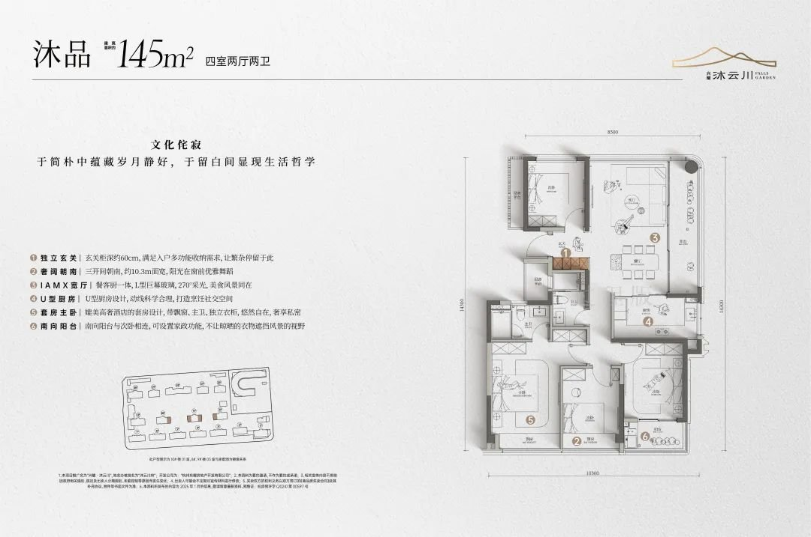
来源：https://m.kan3721.com/huxing2552-43804.html（2025-02-19）
Z12 · 晴屿望湖 143㎡（湖州）
| 年份 | 2025（潮新闻 2025-05-04） | 面积 | 约143㎡ |
|---|---|---|---|
| 房型 | 四室两厅两卫 | 梯户 | 双开门电梯+梯控（梯户比未核实） |
| 得房率 | 事实奇数层“空间使用率”118.5%（开发商口径，不等于得房率） | ||
亮点：第四代住宅；约2.4m进深阳台近40㎡；面宽15.9m四开间朝南；层高3.15m
未找到≥1000px且无重水印的户型图，仅文字记录。
来源：https://tidenews.com.cn/news.html?id=3116311（2025-05-04）；未找到≥1000px的清晰户型图，仅文字
约168㎡ · 四房 · 一梯（5 例，其中带图 5）
Z13 · 中交·荷语江山府 E“观澜”（杭州）
| 年份 | 2024（图源上传 2024-09-20） | 面积 | 约168㎡ |
|---|---|---|---|
| 房型 | 四室两厅三卫 | 梯户 | 未核实 |
| 得房率 | 未核实 | ||
亮点：图注“五开间朝南”；大横厅；四房三卫

来源：https://m.kan3721.com/huxing2543-43649.html（2024-09-20）
Z14 · 龙湖·滨颂御湖境 D“瑰丽”（杭州）
| 年份 | 2024（图源上传 2024-09-20） | 面积 | 约168㎡ |
|---|---|---|---|
| 房型 | 四室两厅三卫 | 梯户 | 未核实 |
| 得房率 | 未核实 | ||
亮点：横厅+大面宽景观阳台；版面附样板间实景；细项文字过小未核实
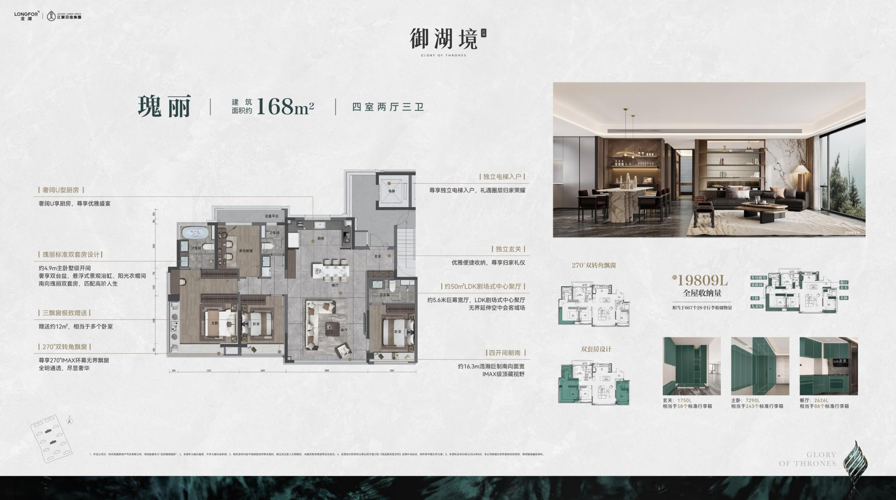
来源：https://m.kan3721.com/huxing2544-43661.html（2024-09-20）
Z15 · 和萃·揽悦园 H“观萃”（杭州）
| 年份 | 2025（图源上传 2025-03-01） | 面积 | 约168㎡ |
|---|---|---|---|
| 房型 | 四室两厅三卫 | 梯户 | 未核实 |
| 得房率 | 未核实 | ||
亮点：主卫浴缸+双台盆；约34㎡奢阔聚场；双套房；约16m南向面宽；约8.55m双联阳台；收纳约25,540L

来源：https://m.kan3721.com/huxing2560-43933.html（2025-03-01）
Z16 · 建杭·璞御栖湖 E“璞樾”（杭州）
| 年份 | 2024（图源上传 2024-06-18） | 面积 | 约169㎡ |
|---|---|---|---|
| 房型 | 四室两厅三卫 | 梯户 | 事实图注“类一梯一户”，私梯厅入户 |
| 得房率 | 未核实 | ||
亮点：约16.1m南向四开间；LDKG一体中枢光厅；主卧套房+走入式衣帽+双台盆；南向7.2m跑道阳台+北阳台；U型明厨
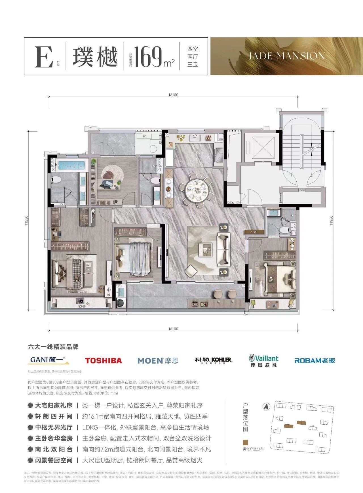
来源：https://m.kan3721.com/huxing2536-43534.html（2024-06-18）
Z17 · 绿城·咏湖雲庐 B“轻裘”（杭州）
| 年份 | 2025（图源上传 2025-02-20） | 面积 | 约170㎡ |
|---|---|---|---|
| 房型 | 四房两厅三卫 | 梯户 | 事实图注“一梯一户户型” |
| 得房率 | 未核实 | ||
亮点：子母门+独立玄关；社交餐厅+大横厅；双套房；四开间朝南

来源：https://m.kan3721.com/huxing2554-43836.html（2025-02-20）